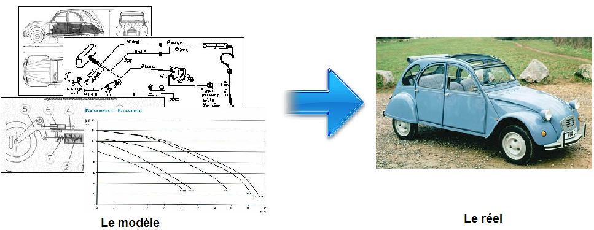

Modélisation

Un modèle est la représentation simplifiée, fidèle et organisée d'un objet, d'un concept, etc. Les modèles sont utilisés dans tous les domaines : scientifiques, techniques et économiques.

- Qu'est ce qu'on trouve dans un modèle ?
On y trouve les documents nécessaires pour décrire un système selon des points de vue différents et complémentaires :
- celui décrivant l'aspect fonctionnel (les fonctionnalités, les contraintes, les exigences, etc.) ;
- celui représentant sa structure (les différents constituants, leur organisation, leurs caractéristiques, etc.) ;
- celui modélisant son comportement (déroulement des fonctionnalités, évolution au cours du temps, interactions entre les constituants, etc.).
- Pourquoi modéliser un système ?
La modélisation est devenue l'outil indispensable pour les ingénieurs et techniciens qui participent de près ou de loin à la conception de systèmes techniques. Le modèle leur permet notamment :
- de décrire les besoins et ainsi les valider auprès du client ;
- d'imaginer des solutions et de pouvoir les valider par simulation grâce à l'outil informatique.
- de coordonner les différentes équipes intervenantes, et ce sur toute les phases du cycle de vie. Les documents qui composent le modèle d'un système sont mis à jour au fur et à mesure, de la réception du cahier des charges jusqu'à la fin de sa vie.
- Pourquoi utiliser sysML ?
- SysML est un langage de modélisation graphique devenu un standard en quelques années dans l'ingénierie système.
- SysML permet de regrouper les spécifications, les contraintes et les paramètres de l'ensemble du système dans une représentation commune à tous les corps de métiers.
- De nombreux outils informatiques aident à la validation des étapes de conception, depuis sa spécification jusqu'à sa validation.
Created with the Personal Edition of HelpNDoc: Easily create PDF Help documents